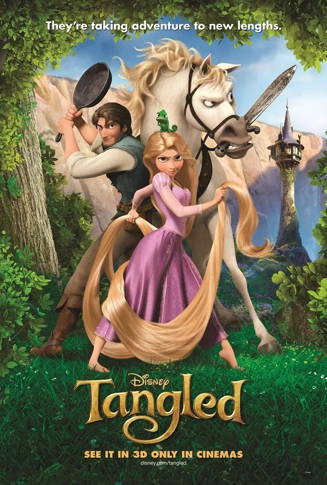

|  |
"Tangled" é um filme que me encanta profundamente. Com sua mistura perfeita de humor, emoção e uma história cativante, ele conquista meu coração todas as vezes. Rapunzel e Flynn são personagens inesquecíveis, e a cena das lanternas é pura magia. As músicas, as cores e a mensagem sobre seguir seus sonhos tornam este filme uma experiência única e especial para mim. É simplesmente impossível não amá-lo!
Tudo neste filme me cativa. Eu sou do tipo de pessoa que adora um bom musical, e confesso que sei as letras das musicas deste filme de cor e salteado e que, até hoje, sempre que revejo este filme magnifico, canto com corpo e alma à medida que as musicas vão aparecendo.
Sempre fiquei maravilhada pela animação deste filme, a capacidade que os animadores tiveram de trazer magia para todas as cenas é algo que se deve elogiar e apreciar, e esse é um dos motivos que me leva a rever este filme tantas vezes, a imensidão de magia e deslumbre neste filme é algo que enche o meu coração de alegria e eu quero presenciar isso o maior número de vezes possíveis.